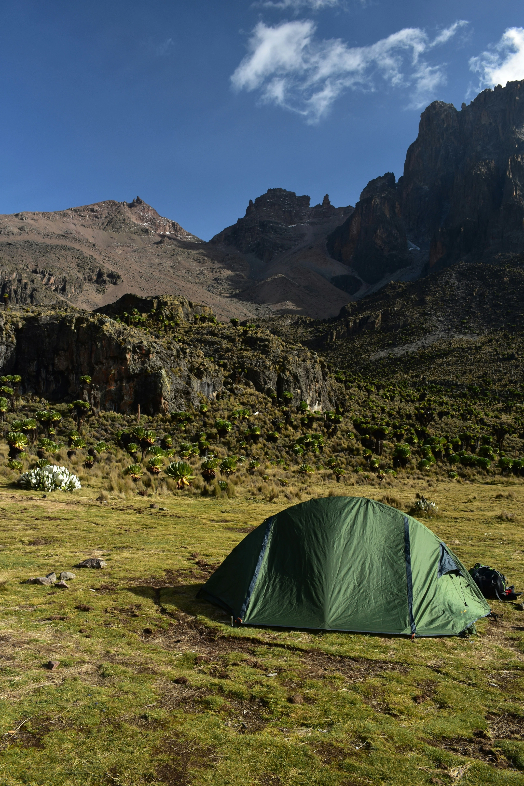
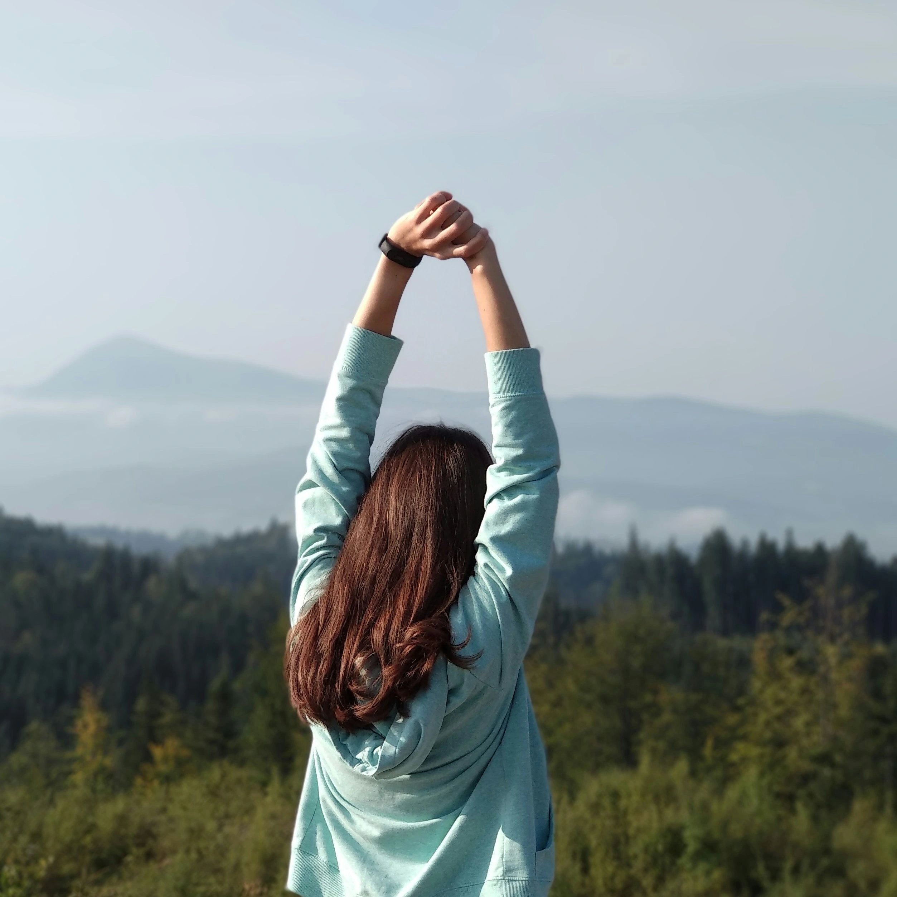
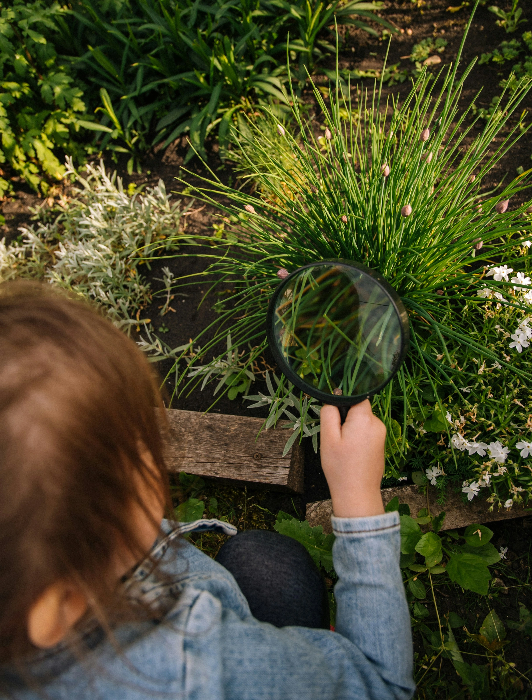
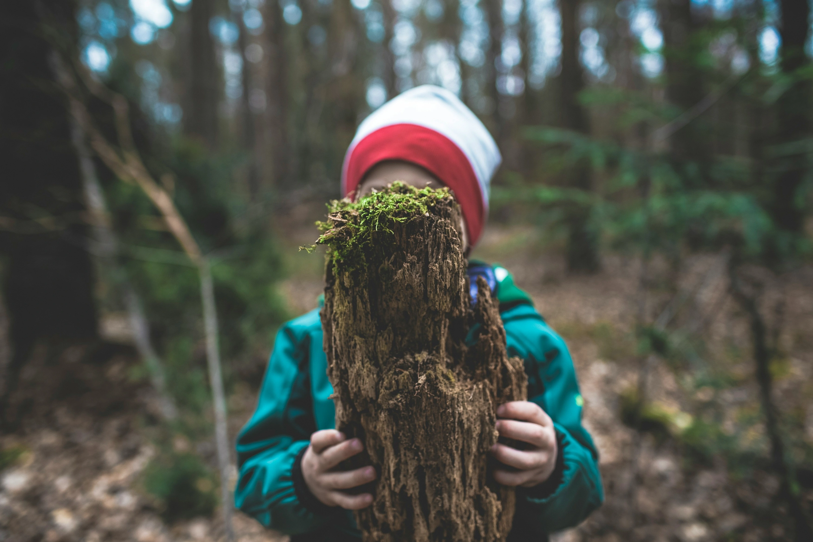
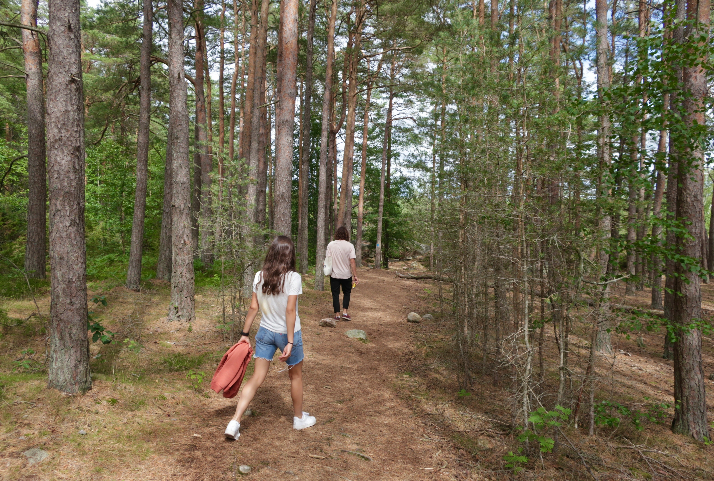
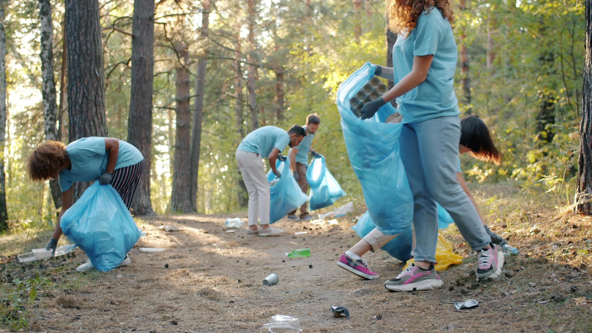
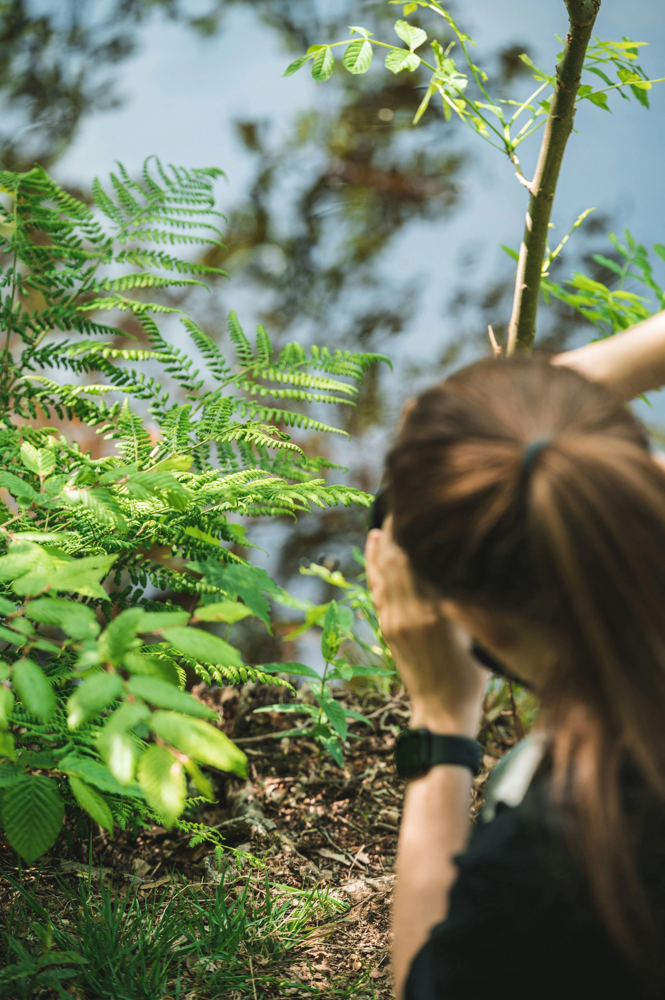
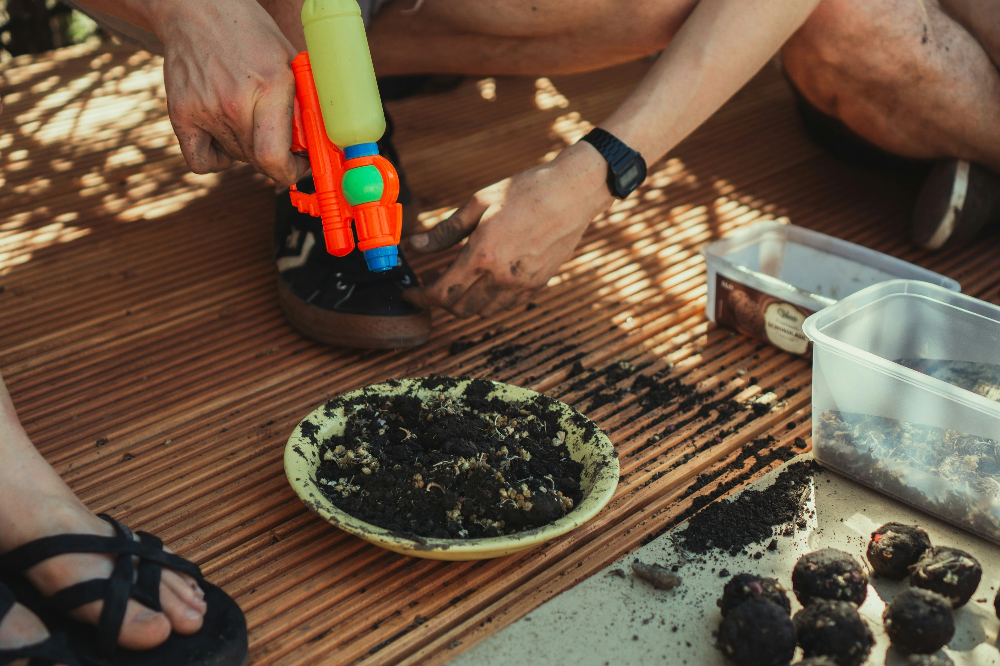
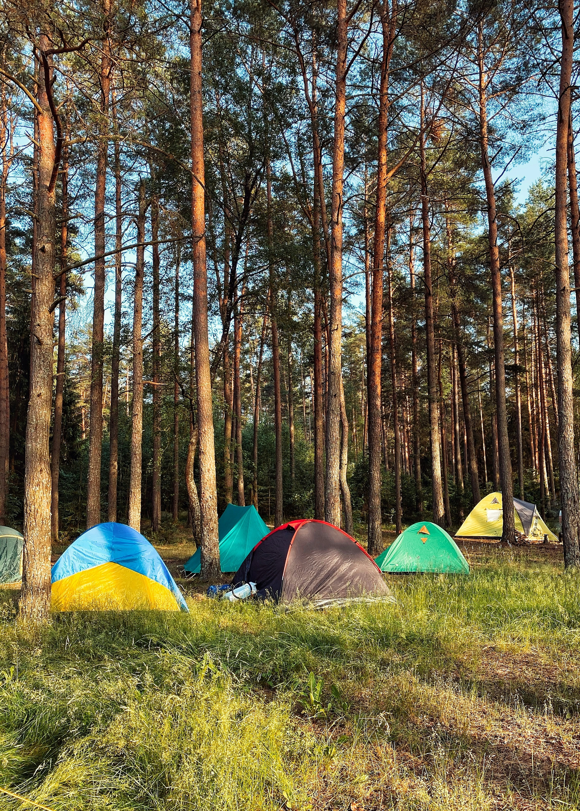
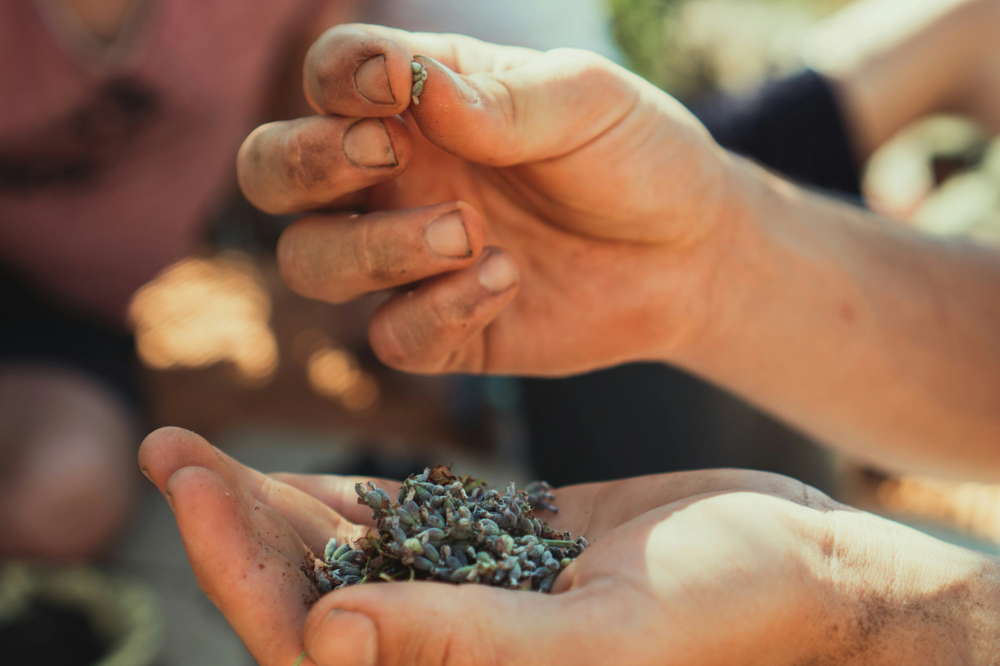

체험 프로그램
자연과 공존하는 가치를 직접 경험할 수 있는 프로그램입니다.

자연 속에서 회복하는
몸과 마음
- 산행 후 스트레칭 가이드
- 호흡과 휴식 중심의 회복 루틴
- 자연 속 쉼의 중요성 안내
성인 1인 기준
78,000
원
88,000원

걷고, 듣고, 느끼는
숲의 리듬
- 숲길을 천천히 걷는 감각 중심 산책
- 소리·냄새·촉감에 집중하는 오감 체험
- 자연과 나의 상태를 기록하는 간단한 워크시트
성인 1인 기준
22,000
원
33,000원
자연과 공존하는 경험을 만나보세요
모든 프로그램은 성인 1인 기준이며 예약 조건에 따라 할인이 적용됩니다.

숲의
소리 수집가
- 숲에서 들리는 자연의 소리를 채집하고 기록하는 체험
- 소리 지도 만들기 + 간단한 아카이빙 활동
38,000
원
50,000원
성인 1인 기준

산의
결을 읽다
- 산의 지형, 바람, 숲의 흐름을 ‘관찰’ 중심으로- 해석하는 느린 탐방 프로그램
- 민속·자연 인문 관점에서 산을 해석하며 걷는 코스
35,000
원
45,000원
성인 1인 기준

걸음의 밀도
- 속도가 아닌 ‘걸음의 감각’에 집중하는 걷기 실험
- 보폭, 호흡, 시선의 높이를 조절하며- 몸의 리듬을 재정렬하는 프로그램
30,000
원
40,000원
성인 1인 기준

산의
기록을 남기다
- 산을 걸으며 쓰레기를 수거하고 기록하며,- 자연에 남겨진 흔적을 관찰하는 환경 실천 프로그램
- 쓰레기가 발생한 맥락과 인간의 생활 방식을 재고
22,000
원
30,000원
성인 1인 기준

자연을
저장하는 법
- 사진·스케치·메모 등 각자의 방식으로- 자연을 기록하는 방법 소개
- 디지털/아날로그 기록법을 함께 진행
40,000
원
55,000원
성인 1인 기준

초보자를 위한
자연 감각 수업
- 등산·산책이 낯선 사람을 위한 감각 프로그램
- 장비, 걷는 법, 자연에서의 기본 매너까지 배우는- 입문자를 위한 수업
25,000
원
35,000원
성인 1인 기준

산에서
함께 쉬는 연습
- ‘아무것도 하지 않기’를 배우는 프로그램
- 쉼의 단계(도착–이완–머묾–회복)를 구조화한- 휴식 경험 프로그램
28,000
원
38,000원
성인 1인 기준

씨앗의 시간
- 씨앗을 관찰하고 선택하며, 자연이 자라기까지- 필요한 시간과 조건을 배우는 프로그램
- 기다림과 돌봄의 과정을 경험
27,000
원
35,000원
성인 1인 기준